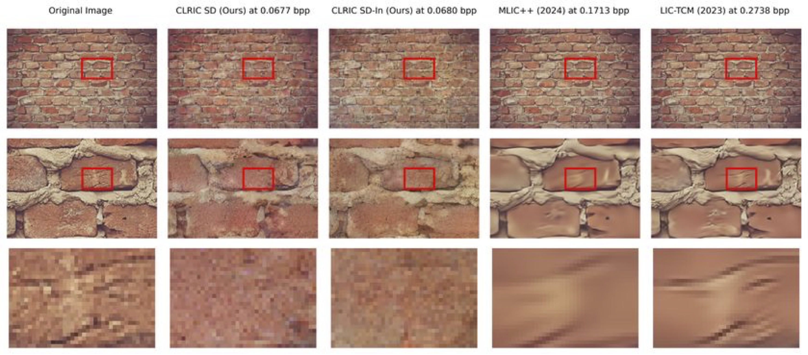

Current image compression models often require separate models for each quality level, making them resource-intensive in terms of both training and storage. To address these limitations, we propose an innovative approach that utilizes latent variables from pre-existing trained models (such as the Stable Diffusion Variational Autoencoder) for perceptual image compression. Our method eliminates the need for distinct models dedicated to different quality levels. We employ overfitted learnable functions to compress the latent representation from the target model at any desired quality level. These overfitted functions operate in the latent space, ensuring low computational complexity, around 25.5 MAC/pixel for a forward pass on images with dimensions 1363 x 2048 pixels. This approach efficiently utilizes resources during both training and decoding. Our method achieves comparable perceptual quality to state-of-the-art learned image compression models while being both model-agnostic and resolution-agnostic. This opens up new possibilities for the development of innovative image compression methods.
Our objective is to address these limitations through a novel approach. We trained an overfitted learnable function (such as COOLCHIC) on latents generated by existing latent image models (e.g., a stable diffusion autoencoder), without requiring retraining or backpropagation within the large pretrained latent image model. Our approach yields results comparable to state-of-the-art bit rate and image quality benchmarks, as shown in Figure \ref{fig:Overfitted_on_latent}. The advantages of this novel approach are summarized as follows:
@article{ameen2025compactlatentrepresentationimage,
title={Compact Latent Representation for Image Compression (CLRIC)},
author={Ayman A. Ameen and Thomas Richter and André Kaup},
year={2025},
eprint={2502.14937},
archivePrefix={arXiv},
primaryClass={eess.IV},
url={https://arxiv.org/abs/2502.14937},
}